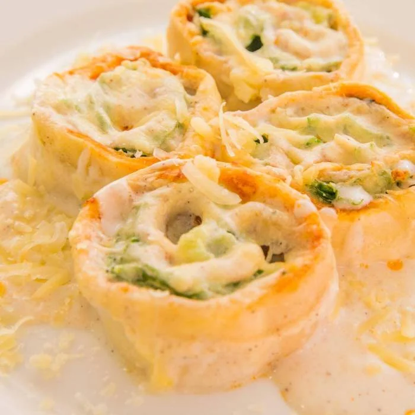
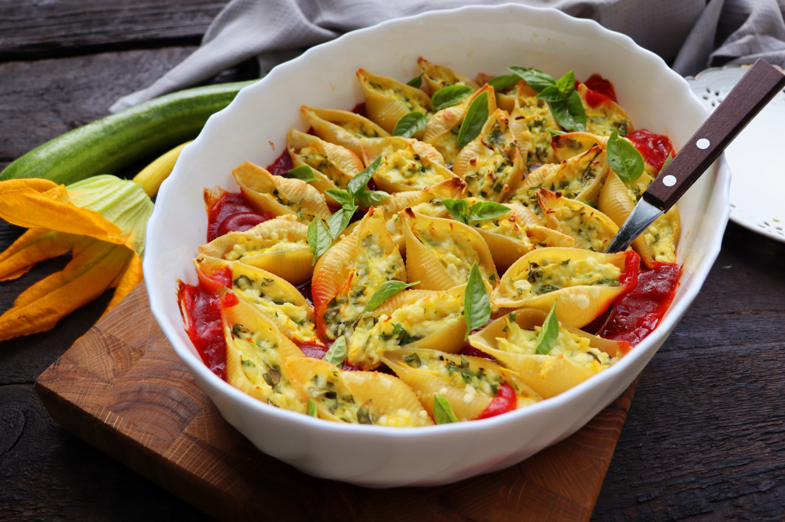

Bem Vindo ao Restaurante Italiano

Rondelli:
Rondelli significam arruelas, em italiano. São lâminas de massas recheadas, enroladas e cortadas em fatias.
Ravioloni:
no seu formato clássico de quadrados recheados com diferentes sabores.
